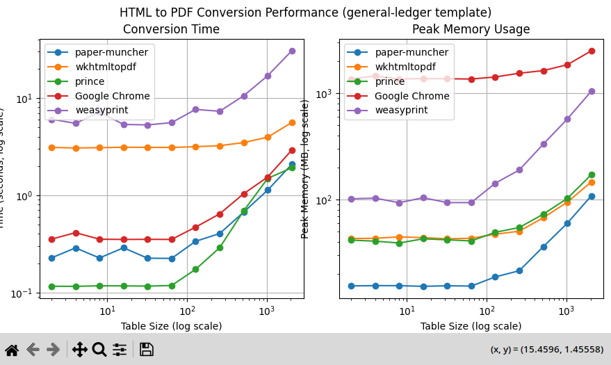

Vaev is a build from scratch browser & web engine. We try in the first place to improve static document generation with a free open source and independant software. Vaev is currently in heavy development.
For now we mostly focus on static websites, you can find our WPT compliance on our dashboard Performance wise we are faster than everyone else for document generation.
For interactive websites we are not yet ready to compete with the big players, we will focus on it after the static part of the web.
This project is currently in an experimental, proof-of-concept phase. Our focus is on exploring new ideas, optimizing performance, and developing core features for potential future integration with Odoo. Please note that we're not yet ready to commit to specific features, timelines, or release dates, and the project's direction may evolve based on our findings.
We're choosing pragmatism over ideals. C++ offers: Scalability: Ideal for large projects. Excellent Tooling: clangd, clang-tidy, clang-format, GCC, MSVC, Visual Studio, Clion, gdb, lldb, valgrin, etc. Strong Typing: Enhances code safety and maintainability. Familiarity: Easy for developers experienced in C-like languages (Java, C#, etc.) to adopt. Safe Subset: We're using a carefully chosen subset of C++ to avoid common pitfalls.
Nope. Never have, never will. And we protect you from many of the advertisers who do. this is guaranteed by our independence
While Chrome excels at small documents, it struggles with larger ones, consuming exponentially more memory and time. Its limited support for page media specs and header/footer customization makes it a poor fit for report generation. When dealing with large documents, Chrome's memory consumption skyrockets, leading to crashes and hangs. This is inherent to its design, optimized for interactive performance, not static media. Relying on Chrome would mean depending on hacks and workarounds that could break with every update.
Weasyprint's strong support for paged media and decent handling of static media in HTML/CSS is commendable. However, its Python implementation makes it inherently slow. The good news? It's relatively small (~70k lines) and open source, so we can contribute and fix issues.